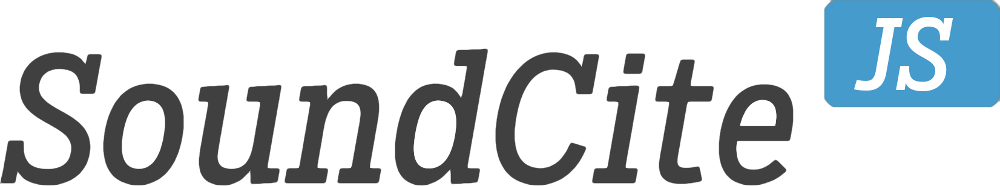
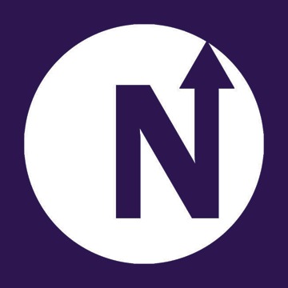
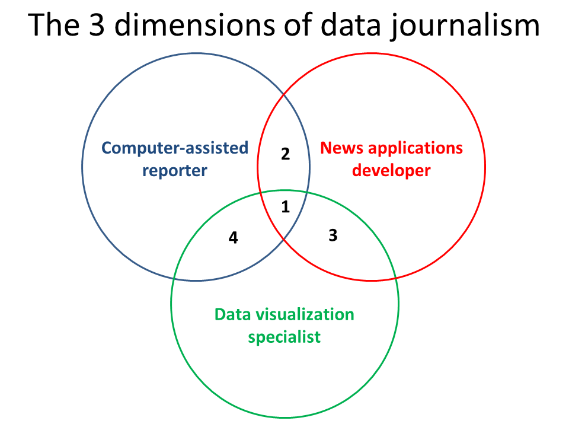

Hello!
Finding the Lab
"Design the future of news."
I thought I was Greil Marcus.

Journalism, Technology and Medill
Journalism education is deeply flawed.
I could have passed through Medill with no digital skills.
Web classes at Northwestern
- Interactive News
- Web Producing
- Intro to Computer Programming
- Tools and Technology of the World Wide Web
- Human-Computer Interaction
None of these classes are required.

How do I learn with no roadmap?
How do I teach without skill?
Coming to Knight Lab gave me a roadmap.
Developing SoundCite
Initially, collaboration was hard.
Then, two key things happened.
- We hired Joe Germuska.
- We moved to Fisk Hall.
Joe!
An open, collaborative space felt like home.
April 2013: Alpha release
June 2013: Beta release
SoundCite was my first product.
I'm still parsing what I learned.
What is a journalism product?
What do journalists need?
- Universally accessible
- No coding required
- Free to use
SoundCite's Answers
- SoundCloud
- Generated embed codes
- Easy-to-use clip creator
Multimedia is the next frontier of web storytelling, long and short.
Longform storytelling is beginning to standardize multimedia.
SoundCite works with any story.
Audio is not a first-class citizen on the web.
SoundCite still doesn't work on mobile.
Without a universally acceptable audio codec, browser suppport will remain weak.
We need more open source tools for journalists.
What's next?
Finding talent at Northwestern should be easier.
The Knight Lab must become Northwestern's community of webmakers.
Community-Building Initiatives
- learn.knightlab.com
- Open Lab Hours
- Brown Bag Lunches
learn.knightlab.com
We have the technology.

Three Categories of Skill
But first, digital literacy for all.
Open Lab Hours
A physical space for makers and learners.
Student-run, student-owned.
Is that video ready? Should it go here?
Brown Bag Lunches
Using our staff expertise
Knight Lab changed my life.
Every journalism school needs a Knight Lab.